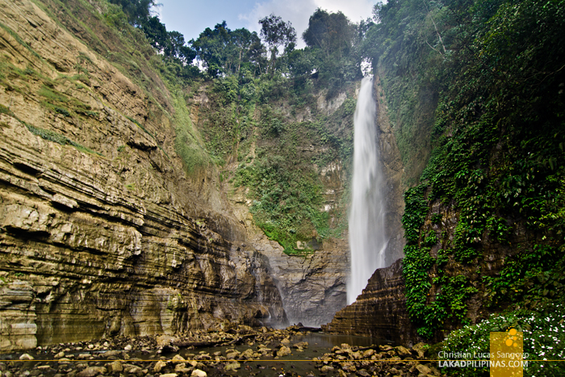

Park Profile • South Cotabato
Lake Sebu and Seven Falls
Lake Sebu offers lakes, waterfalls, and cultural experiences. Choose local guides and support community-run tourism while keeping the area clean.
One of the most exciting activities to do when visiting South Cotabato is to experience the Lake Sebu 7 Falls and try the highest zip line in Southeast Asia. The majestic 7 cascading falls are located at Barangay Lake Seloton.
First on the list are the Seven Waterfalls or Seven Falls which is a series of majestic cascades lined-up one after the other. The easiest to reach is the first falls (named Dongon Falls or Hikong Alu in the local language) which requires minimal walking. While the last two are the most difficult to access since it requires a long hike down to the valley floor to see them.
The second falls, being the highest, is called Hikong Bente or unmeasurable falls. The third one is Hikong B'lebel which means coil or zigzag falls. The fourth falls in Hikong Lowig which means booth. The fifth falls is Hikong K'fo-i which means short falls. While the seventh and last falls is Hikong Tonok which means soil.
Helpful reminders
- Check official park announcements and local weather before visiting.
- Follow posted rules and instructions from park staff or guides.
- Respect nature and local communities; take all trash with you.